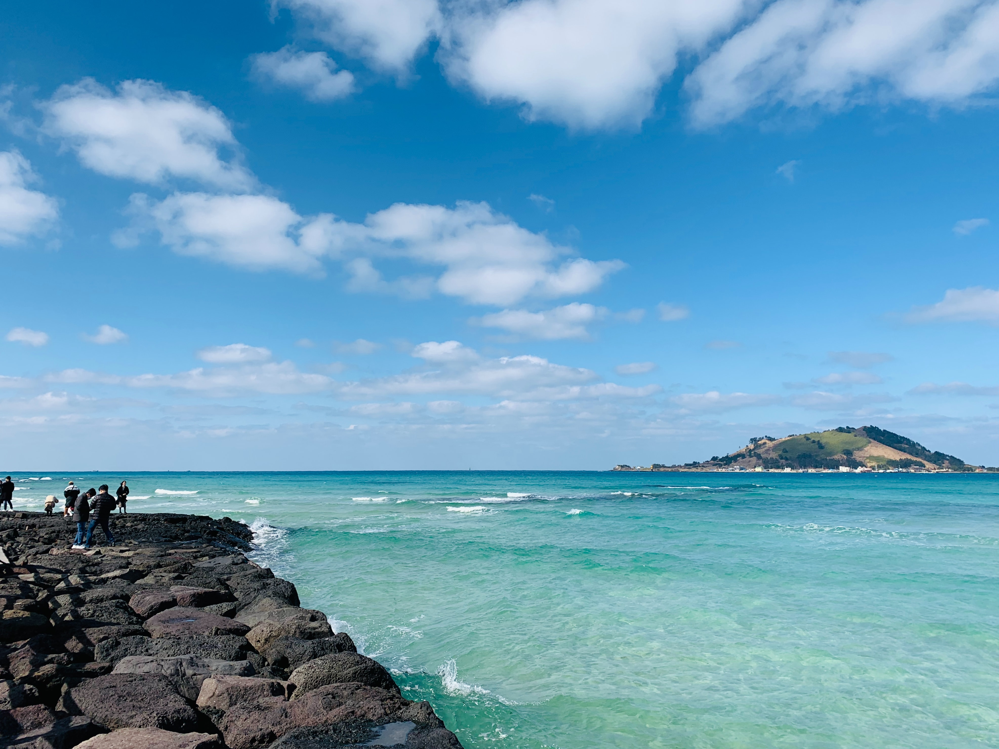

제주도는 섬 전체가 하나의 거대한 관광자원인 제주도. 에메랄드빛 물빛이 인상적인 협재 해수욕장은 제주 대표 여행지며, 파도가 넘보는 주상절리와 바다 위 산책로인 용머리 해안은 제주에서만 볼 수 있는 천혜의 자연경관으로 손꼽힌다. 드라마 촬영지로 알려진 섭지코스는 꾸준한 사랑을 받고 있으며 한라봉과 흑돼지, 은갈치 등은 제주를 대표하는 음식이다. 또한 우리나라에서 가장 인기있는 여행지 이다.

한국·중국·일본 등 극동 지역의 중앙부에 있어 지정학적으로도 중요하며, 도 전체가 바다로 둘러싸였다. 수리적(數理的)으로는 동경 126°08'∼126°58', 북위 33°06'∼34°00'에 위치한다. 북단은 북위 34°00'의 제주시 추자면 대서리이며, 남단은 북위 33°06'의 서귀포시 대정읍 마라도다. 한국 최남단에 있는 도로서, 제주도를 포함해 9개의 유인도와 55개의 무인도로 이루어졌다. 이 가운데 유인도는 우도·상추자도·하추자도·비양도·횡간도·추포도·가파도·마라도이다. 남북 간의 거리가 약 31㎞, 동서간의 거리가 약 73㎞로 동서로 가로놓인 모양이다. 러시아·중국 등의 대륙과 일본·동남아 등지를 연결하는 요충지이며, 천혜의 자연경관이 수려한 세계적인 휴양관광지다.